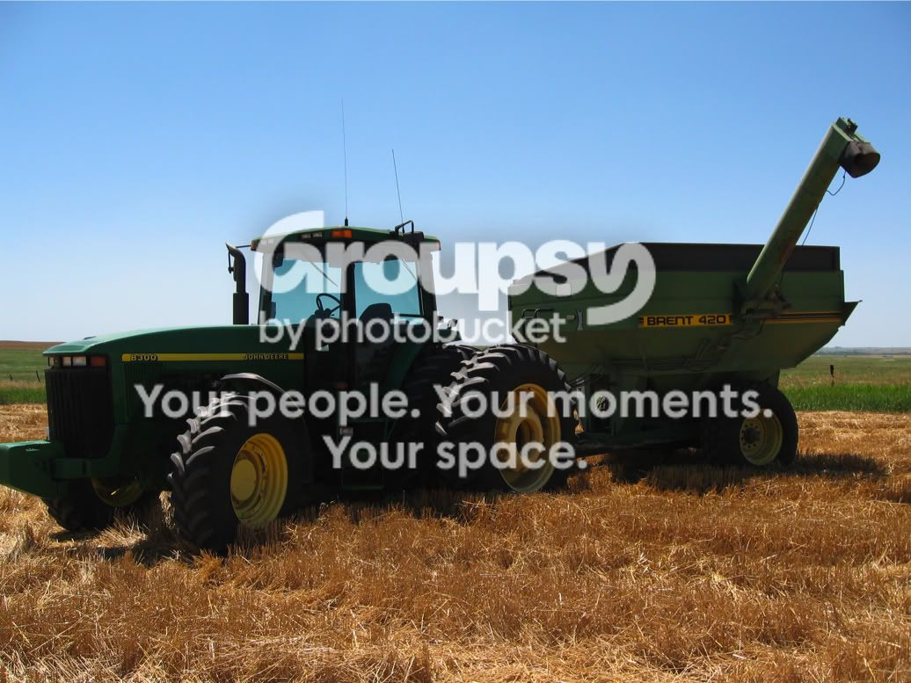
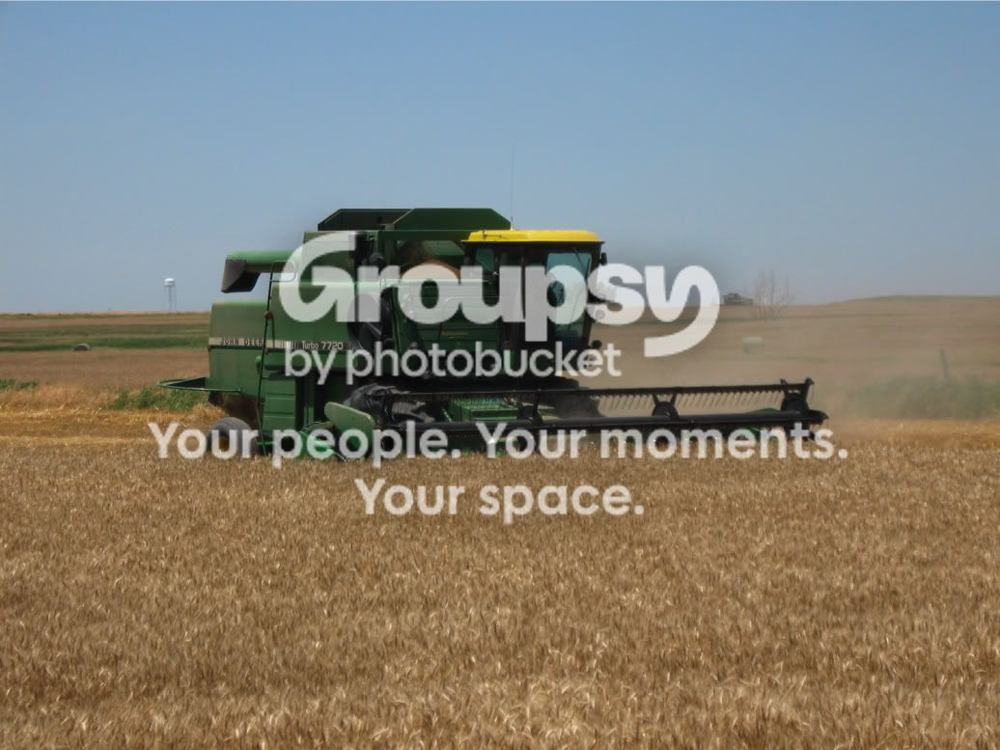
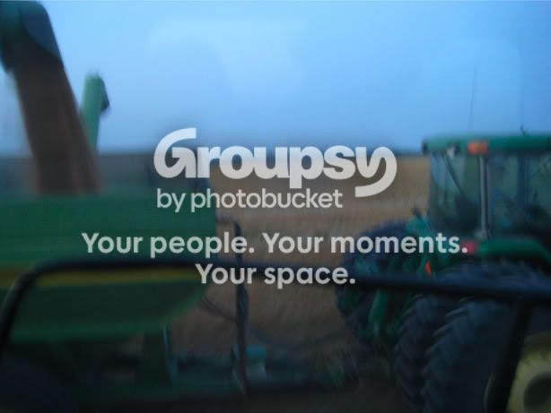
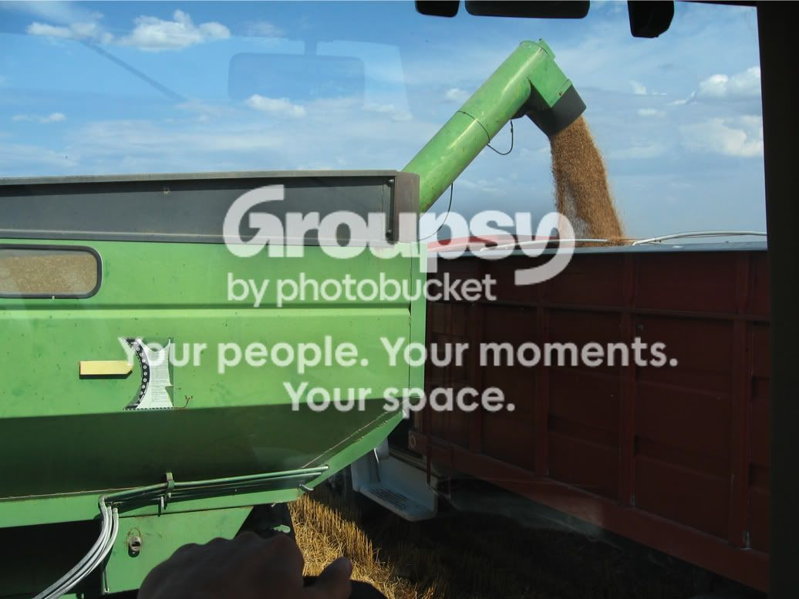
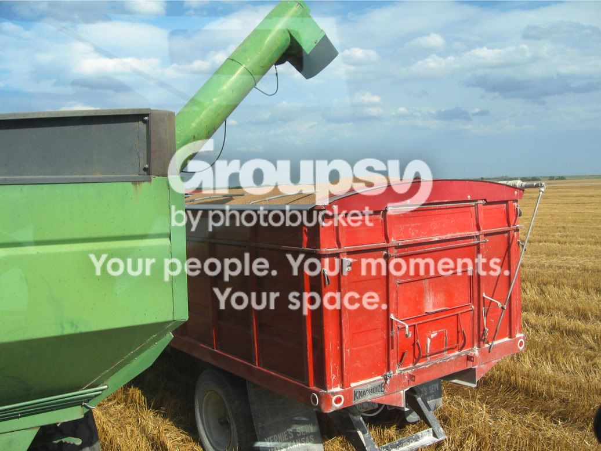
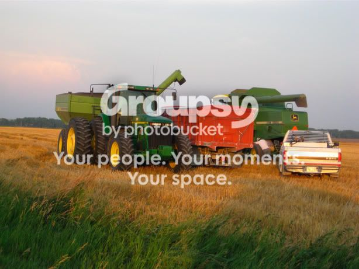
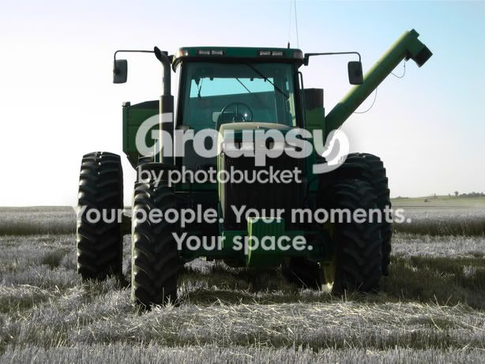
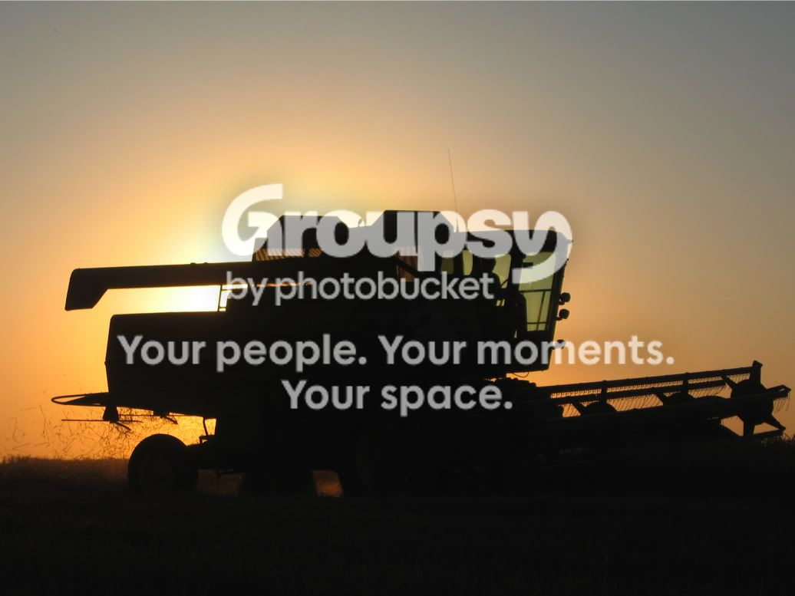
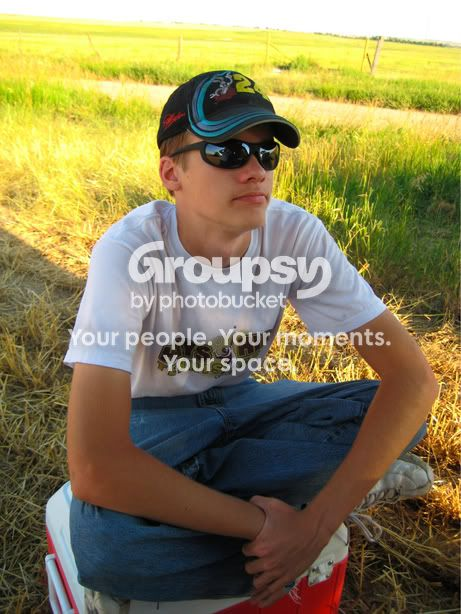

HARVEST REPORT 2008
*Eagle Cry*
*pronounced 'Harvess Repore 2008'*
*Eagle Cry*
*pronounced 'Harvess Repore 2008'*
(Last years thread here if you wish to see it, since I'm lazy, most of the following is copied straight out of it)
For those of you who don't know (probably most of you), I live in Kansas and my family farms. (the reason for my recent absence that none of you noticed)
To have a little revenge on the people that assume people in Kansas don't have access to the internet (someone has actually asked me on a forum 'Do you have the internet in kansas?', my response: 'No, and neither do you, but I do have access to the internet.') I am going to assume the majority of you know nothing of farming, so, into a brief explanation of the terms I will then use to portray the approximate size of our little operation.
/*you can skip this section if you just want to see the pictures*/
quarter - 1/2 mile x 1/2 mile (hence the name, its one quarter of a square mile)
acre - 43560 sq ft., to give it a little perspective, its 1/2 mile x 16.5 feet (or if my calculations are correct, ~4/5 of a (american) football field)
bushel - a volume measurement mainly used for grain, one bushel is apprx. 8 (dry) gallons (also, 60 some odd pounds)
combine - the largest of the big green things with an engine your going to see, named that because it combined 2 functions that used to be done by different machines, cutting, and thrashing
tractor - smaller of the green things with an engine, basically just pulls stuff, lots of really heavy stuff, like a grain cart loaded with ~24,000 lbs. of wheat (thats 24 thousand pounds, 12 tons, 10,886 kg)
overall our year was very good, we harvest over 3x the amount of wheat we did 2 years ago, on the same amount of land
have any questions about things? ask away!
*now on to the pictures, heres the best 10, another 30 or so can be found on my photobucket page here*
my office:

my computer:
my job:
take the wheat from this beast:

like this (taken by my mom when she was riding in the combine):

and fill up the truck like this:

until it is full, like this (at which point it weighs about 36,000 pounds):

mechanical trouble (had a lot of that this year unfortunately, made us take 4 days longer then normal):

artistic shots:


sexy tractor driving beast (it is really hard to sit on a cooler of that size, I was trying to avoid chigger bites):

and this last one is a panoramic I tried to throw together in GIMP (which I almost never use), it didn't turn out too bad: